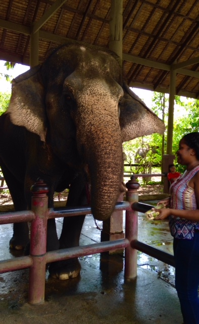
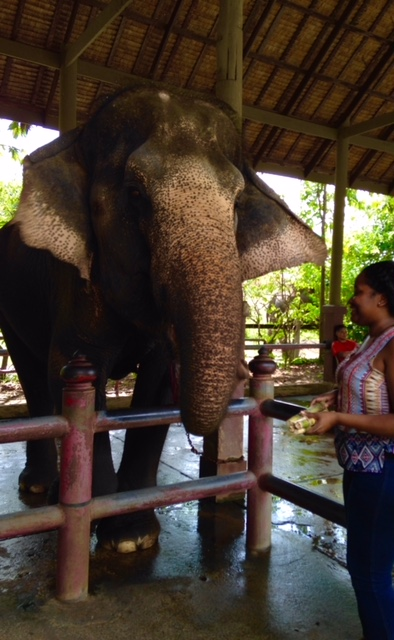

Thailand: Bangkok, Chaing Mai ♡
 

FACTS
OFFICIAL NAME : Kingdom of Thailand | FORM OF GOVERNMENT : Constitutional monarchy| CAPITAL : Bangkok| POPULATION : 67,741,401 | OFFICIAL LANGUAGE : Thai| MONEY : Baht
PEOPLE & CULTURE
About 90 percent of the people are Buddhist, but about three million Muslims live in the south near the border with Malaysia.
Thai children go to elementary school for six years. Then they may attend high school for another six years, but their families must pay for the education. Boys begin military training in ninth grade.
Food in Thailand is influenced by Chinese and Indian cultures. Most Thai dishes are spicy and many common dishes include hot chilies, lemongrass, basil, ginger, and coconut milk.
Thai farmers cultivate mulberry trees that feed silkworms. The worms create silk, which is made into beautiful silk clothing in Thailand, France, and the United States.
Bangkok is called the Venice of the East because there are 83 canals. As many as 10,000 boats full of fruits, vegetables, and fish crowd the canals and create a floating market.
The city of Bangkok is home to many impressive Buddhist structures featuring gold-layered spires, graceful pagodas, and giant Buddha statues.
GOVERNMENT & ECONOMY
Known as Siam until 1939, Thailand is the only Southeast Asian country never to have been taken over by a European power. A revolution in 1932 led to a constitutional monarchy.
The king is the leader of the country. The prime minister is picked from among members of the House of Representatives, but is appointed by the king.
Agriculture and tourism are the most important industries in Thailand.
In December 2004, the catastrophic Indian Ocean tsunami hit Thailand, but the country's economy has largely recovered from the disaster's effect.